You can also download a PDF copy of this lecture.
Over-dispersion can occur for generalized linear models that assume a Poisson or binomial distribution for the response variable.
When we specify a distribution in a generalized linear model, what we are actually specifying is the variance structure \[ \text{Var}(Y_i) = \phi V[E(Y_i)], \] where \(\phi\) is the dispersion parameter and \(V\) is the variance function.
Over-dispersion is when \[ \text{Var}(Y_i) > \phi V[E(Y_i)], \] and underdispersion is when \[ \text{Var}(Y_i) < \phi V[E(Y_i)]. \] Over-dispersion is fairly common in practice, but under-dispersion is relatively rare.
If \(Y_i\) has a Poisson distribution, then \[ \text{Var}(Y_i) = E(Y_i), \] so that it is implicitly assumed that \(\phi = 1\) and \(V(z) = z\). Over-dispersion occurs if \[ \text{Var}(Y_i) > E(Y_i). \]
If \(C_i\) has a binomial distribution, and \(Y_i = C_i/m_i\), then \[ \text{Var}(Y_i) = E(Y_i)[1-E(Y_i)]/m_i, \] so that it is implicitly assumed that \(\phi = 1\) and \(V(z) = z(1-z)/m_i\). over-dispersion occurs if \[ \text{Var}(Y_i) > E(Y_i)[1-E(Y_i)]/m_i. \]
In general, failing to account for over-dispersion (or a misspefication of the variance structure in general) may yield incorrect standard errors (usually too small in the case of over-dispersion), leading to incorrect test statistics and confidence intervals.
Wrong assumed distribution for the response variable.
Unobserved explanatory variables that vary over observations.
Note: A misspecified mean structure (e.g., failing to transform an explanatory variable or omitting a strong interaction) may appear as overdisperson.
Example: Consider the following data from an experiment that investigated the proportion of rotifers of two species remaining in suspension in different solution densities after being put into a centrifuge.
myrotifer <- trtools::rotifer
p <- ggplot(myrotifer, aes(x = density, y = y/total)) +
geom_point() + facet_wrap(~species) +
labs(y = "Proportion of Rotifers\n Remaining in Suspension",
x = "Density of Solution") + theme_minimal()
plot(p)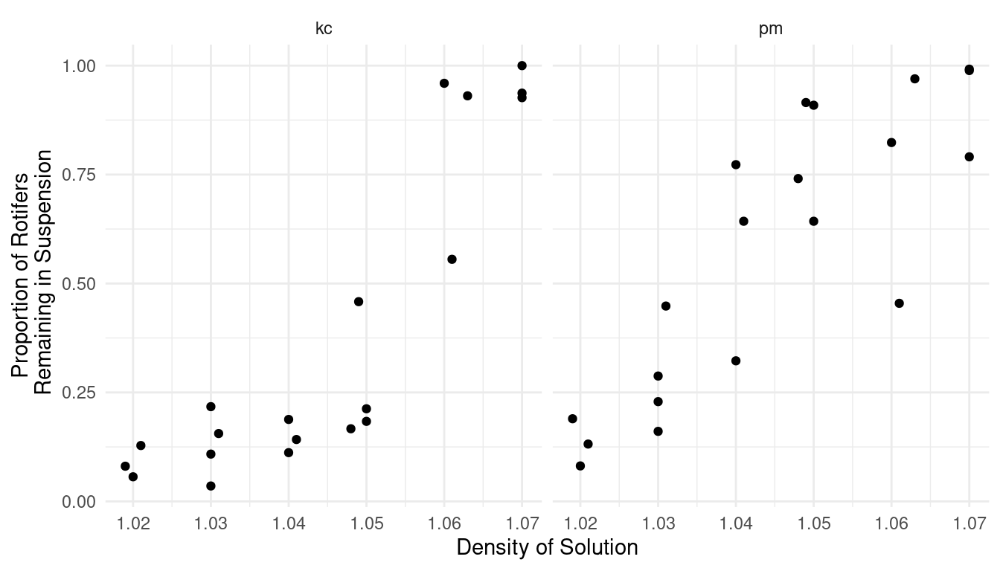 Logistic regression might be a reasonable model here.
m <- glm(cbind(y, total - y) ~ species * density,
family = binomial, data = myrotifer)
d <- expand.grid(species = c("kc","pm"), density = seq(1.02, 1.07, length = 100))
d$yhat <- predict(m, newdata = d, type = "response")
p <- p + geom_line(aes(y = yhat), data = d)
plot(p)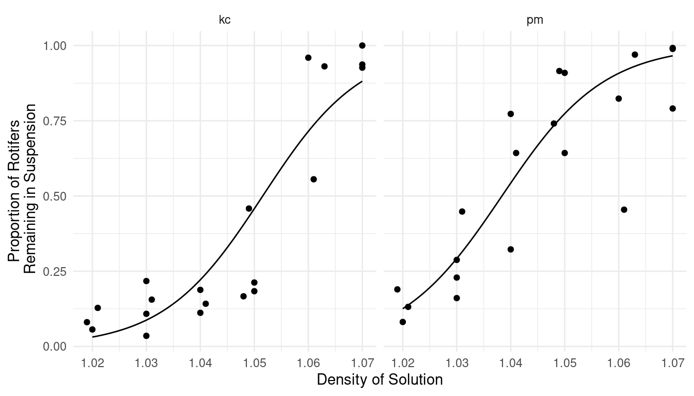 Do these data exhibit over-dispersion for this model?
Standardized residuals can be used to detect over-dispersion. There are several types for GLMs.
Pearson residuals. Pearson residuals are defined as \[
\frac{y_i - \hat{y}_i}{\sqrt{\widehat{\text{Var}}(Y_i)}}.
\]
Dividing a Pearson residual by another term to account for the variance
\(\hat{y}_i\) creates a
standardized Pearson residual. These are obtained using
rstandard(m, type = "pearson").
Deviance residuals. The residual deviance can be decomposed into
a per-observation contribution so that \(D =
\sum_{i=1}^n d_i\). Then the residual deviance is defined as
\[
\text{sign}(y_i - \hat{y}_i)\sqrt{d_i},
\] where \[
\text{sign}(z) =
\begin{cases}
1, & \text{if $z > 0$}, \\
0, & \text{if $z = 0$}, \\
-1, & \text{if $z < 0$}.
\end{cases}
\] Dividing a deviance residual by another term to account for
the variance \(\hat{y}_i\) creates a
standardized deviance residual. These are obtained using
rstandard(m, type = "deviance"). A numerical approximation
to these residuals obtained when omitting the observation can be
obtained using rstudent(m).
Studentized residuals. The function rstudent will
produce approximate studentized residuals for GLMs.
Comment: If the model is correct the residuals might be approximately normally distributed with a mean of zero and standard deviation of one (i.e., “standard normal”), so an excess of values greater than two (in absolute value) may indicate over-dispersion or some other problem with the model. But with very coarse data (e.g., very small counts in a Poisson regression model or proportions with small \(m_i\) in a logistic regression model), the distribution of these residuals is not approximately normal.
Example: Let’s look at the residuals for the
rotifer model.
par(mfcol = c(1,3))
plot(predict(m), rstandard(m, type = "pearson"), ylim = c(-10, 7), main = "Pearson")
abline(h = c(-2,2), lty = 2)
plot(predict(m), rstandard(m, type = "deviance"), ylim = c(-10, 7), main = "Deviance")
abline(h = c(-2,2), lty = 2)
plot(predict(m), rstudent(m), ylim = c(-10, 7), main = "Studentized")
abline(h = c(-2,2), lty = 2)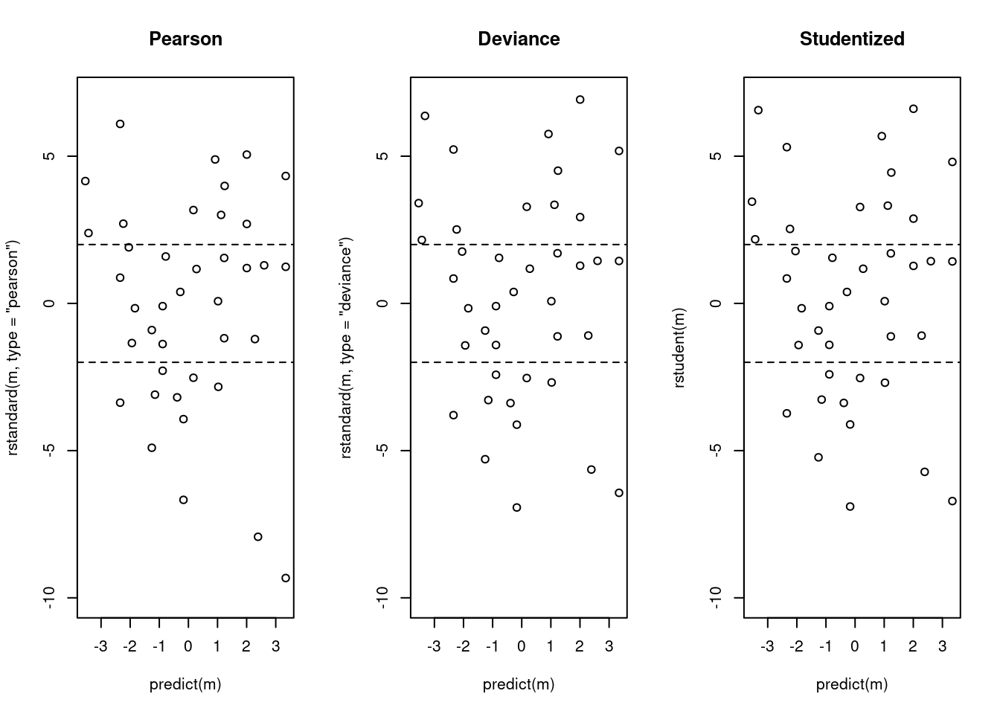 Is there an explanation of the over-dispersion?
Another metric is to compare the residual deviance to the residual degrees of freedom in a GLM with a response variable with either a Poisson or binomial distribution. If the model is (approximately) correct then the ratio of the residual deviance to the residual degrees of freedom is approximately one.
Example: Consider the residual deviance and residual degrees of freedom for the rotifer model.
summary(m)
Call:
glm(formula = cbind(y, total - y) ~ species * density, family = binomial,
data = myrotifer)
Coefficients:
Estimate Std. Error z value Pr(>|z|)
(Intercept) -114.35 4.03 -28.35 <2e-16 ***
speciespm 4.63 6.60 0.70 0.48
density 108.75 3.86 28.19 <2e-16 ***
speciespm:density -3.08 6.33 -0.49 0.63
---
Signif. codes: 0 '***' 0.001 '**' 0.01 '*' 0.05 '.' 0.1 ' ' 1
(Dispersion parameter for binomial family taken to be 1)
Null deviance: 3180.99 on 39 degrees of freedom
Residual deviance: 434.02 on 36 degrees of freedom
AIC: 596.6
Number of Fisher Scoring iterations: 5If the model is correct and there is no over-dispersion, the residual deviance has approximate a \(\chi^2\) distribution with degrees of freedom equal to the residual degrees of freedom. We can use this as an informal test for over-dispersion.
f <- function(x) dchisq(x, 36)
curve(f, from = 0, to = 500, n = 1000) 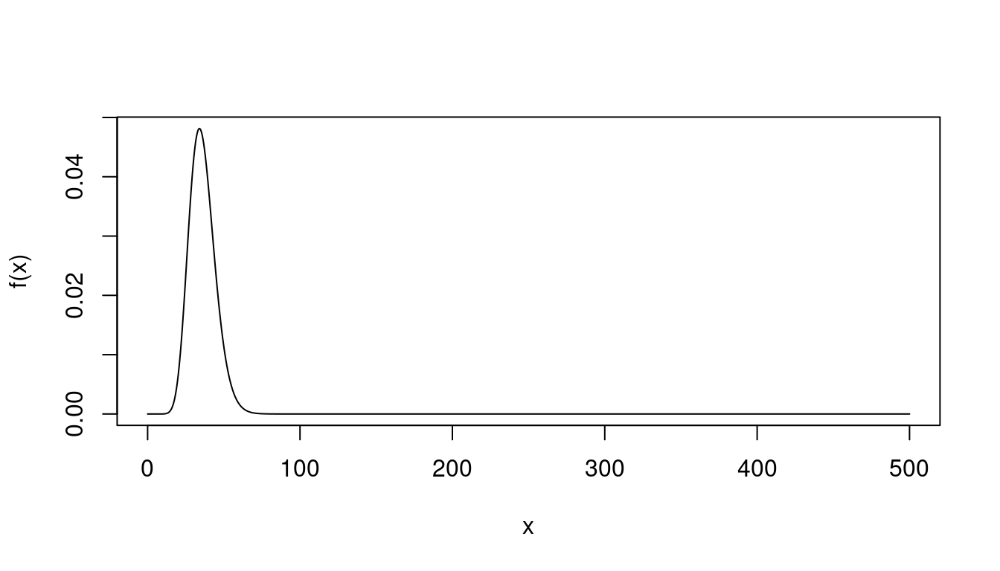
1 - pchisq(434.02, df = 36)[1] 0Residuals are more informative, but the residual deviance is a quick way to check to see if over-dispersion may be an issue.
Note: For logistic regression, over-dispersion cannot be diagnosed in this way for binary data (and the residual deviance may not be reliable if the \(m_i\) are very small).
Example: Let’s look again a the Poisson regression model for the trawling data.
library(COUNT)
data(fishing)
m <- glm(totabund ~ period * meandepth + offset(log(sweptarea)),
family = poisson, data = fishing)
d <- expand.grid(sweptarea = 1, period = levels(fishing$period),
meandepth = seq(800, 5000, length = 100))
d$yhat <- predict(m, newdata = d, type = "response")
p <- ggplot(fishing, aes(x = meandepth, y = totabund/sweptarea)) +
geom_point(alpha = 0.5) + facet_wrap(~ period) + theme_minimal() +
labs(x = "Mean Trawl Depth (meters)",
y = "Fish Caught Per Square Meter Trawled") +
geom_line(aes(y = yhat), data = d)
plot(p)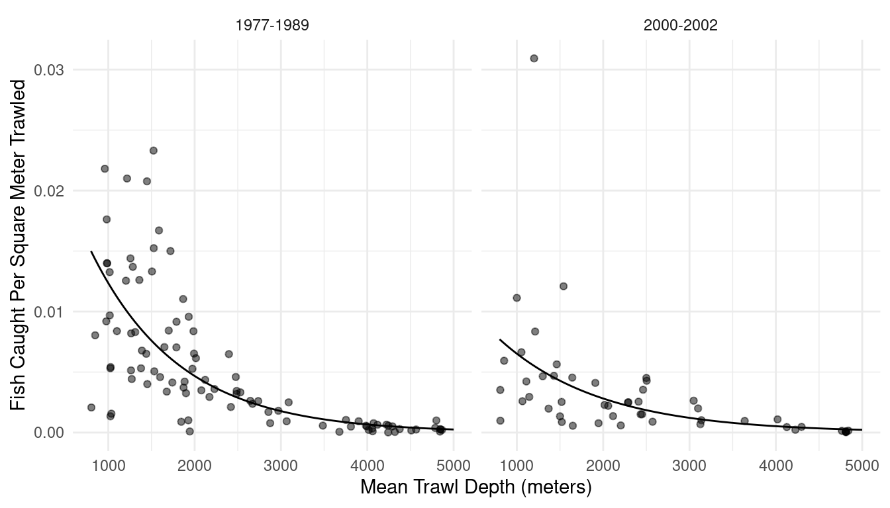 Might there be over-dispersion here?
summary(m)
Call:
glm(formula = totabund ~ period * meandepth + offset(log(sweptarea)),
family = poisson, data = fishing)
Coefficients:
Estimate Std. Error z value Pr(>|z|)
(Intercept) -3.42e+00 1.49e-02 -229.67 <2e-16 ***
period2000-2002 -7.71e-01 2.97e-02 -25.94 <2e-16 ***
meandepth -9.71e-04 7.96e-06 -121.94 <2e-16 ***
period2000-2002:meandepth 1.32e-04 1.52e-05 8.65 <2e-16 ***
---
Signif. codes: 0 '***' 0.001 '**' 0.01 '*' 0.05 '.' 0.1 ' ' 1
(Dispersion parameter for poisson family taken to be 1)
Null deviance: 46176 on 146 degrees of freedom
Residual deviance: 14982 on 143 degrees of freedom
AIC: 15962
Number of Fisher Scoring iterations: 5fishing$eta <- predict(m)
fishing$res <- rstudent(m)
p <- ggplot(fishing, aes(x = eta, y = res)) + theme_minimal() +
geom_point(alpha = 0.25) +
labs(x = "Predicted Value (log scale)",
y = "Studentized Residual") +
geom_hline(yintercept = c(-2, 2), linetype = 3)
plot(p)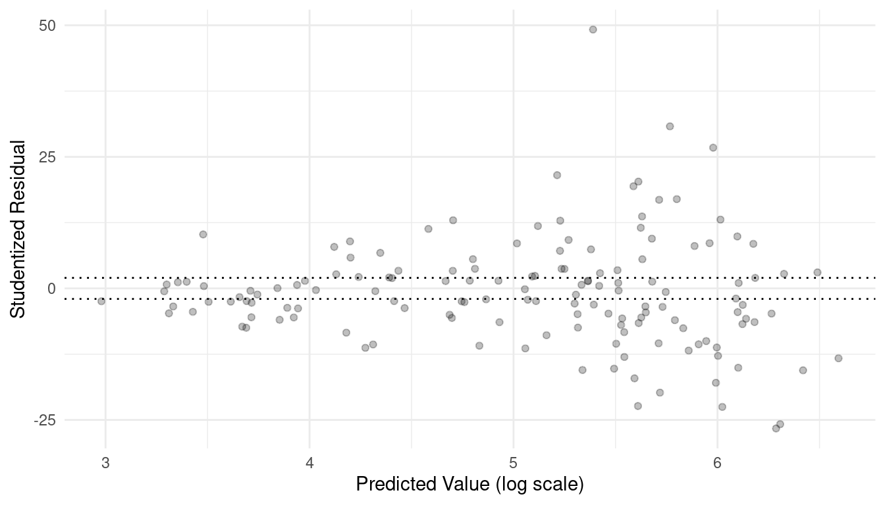 Over-dispersion is not the only issue here. The variance of the residuals is not constant.
There are several potential solutions to over-dispersion.
Quasi-likelihood. Specify a variance structure other than the one implied by a specified distribution.
Specify a different distribution (possibly outside the exponential family).
Use a robust estimator of the standard errors (i.e., heteroscedastic consistent standard errors).
The Poisson and binomial distributions assume the variance structures
\[
\text{Var}(Y_i) = \phi E(Y_i) \ \ \ \text{and} \ \ \ \text{Var}(Y_i) =
\phi E(Y_i)[1 - E(Y_i)]/m_i,
\] respectively, where the dispersion parameter is
fixed at \(\phi = 1\). One
solution is to allow \(\phi\) to be an
unknown parameter to “relax” the variance structure and allow the
variance to be larger than it would be for a Poisson or binomial
distribution. The dispersion parameter can be estimated. R uses \[
\hat{\phi} = \frac{1}{n-p}\sum_{i=1}^n \frac{(y_i -
\hat{y}_i)^2}{\mbox{V}(\hat{y}_i)},
\] which is analogous to the estimate of \(\sigma^2\) in a normal linear model. This
is a quasi-likelihood approach because the variance structures with
\(\phi \neq 1\) do not correspond to a
binomial or Poisson distribution. This kind of quasi-likelihood can be
done with glm by using quasipoisson or
quasibinomial instead of poisson or
binomial, respectively, when specifying the
family argument.
Example: Consider again the rotifer model.
m.quasi <- glm(cbind(y, total - y) ~ species + density + species:density,
family = quasibinomial, data = myrotifer)
plot(predict(m.quasi), rstudent(m.quasi), main = "Residual Plot")
abline(h = c(-2,2), lty = 2)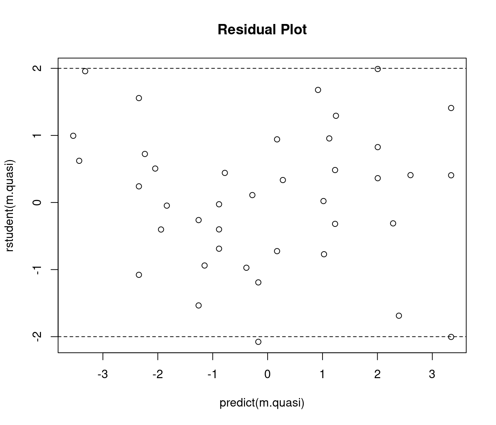 Note: You cannot compare the residual deviance to the residual degrees of freedom as a diagnostic to determine if using quasi-likelihood was successful, but standardized residuals are still appropriate.
How does this impact our inferences?
m.binom <- glm(cbind(y, total - y) ~ species + density + species:density,
family = binomial, data = myrotifer)
cbind(summary(m.binom)$coefficients, confint(m.binom)) Estimate Std. Error z value Pr(>|z|) 2.5 % 97.5 %
(Intercept) -114.352 4.034 -28.3454 9.534e-177 -122.420 -106.598
speciespm 4.629 6.598 0.7016 4.830e-01 -8.464 17.431
density 108.746 3.857 28.1910 7.535e-175 101.332 116.460
speciespm:density -3.077 6.329 -0.4862 6.268e-01 -15.354 9.487cbind(summary(m.quasi)$coefficients, confint(m.quasi)) Estimate Std. Error t value Pr(>|t|) 2.5 % 97.5 %
(Intercept) -114.352 14.95 -7.6472 4.736e-09 -146.02 -87.01
speciespm 4.629 24.46 0.1893 8.509e-01 -46.15 51.31
density 108.746 14.30 7.6056 5.358e-09 82.60 139.02
speciespm:density -3.077 23.46 -0.1312 8.964e-01 -47.81 45.70# odds ratios for effect of a 0.01 unit increase in density
trtools::contrast(m.binom,
a = list(species = c("kc","pm"), density = 0.02),
b = list(species = c("kc","pm"), density = 0.01),
cnames = c("kc","pm"), tf = exp) estimate lower upper
kc 2.967 2.751 3.200
pm 2.877 2.607 3.174# odds ratios for effect of a 0.01 unit increase in density
trtools::contrast(m.quasi,
a = list(species = c("kc","pm"), density = 0.02),
b = list(species = c("kc","pm"), density = 0.01),
cnames = c("kc","pm"), tf = exp) estimate lower upper
kc 2.967 2.220 3.965
pm 2.877 1.973 4.195Note that point estimates are unchanged, but standard errors, tests, and confidence intervals are affected.
Example: Now let’s try the same approach with trawling data.
m.quasi <- glm(totabund ~ period * meandepth + offset(log(sweptarea)),
family = quasipoisson, data = fishing)
plot(predict(m.quasi), rstudent(m.quasi), main = "Residual Plot")
abline(h = c(-2,2), lty = 2)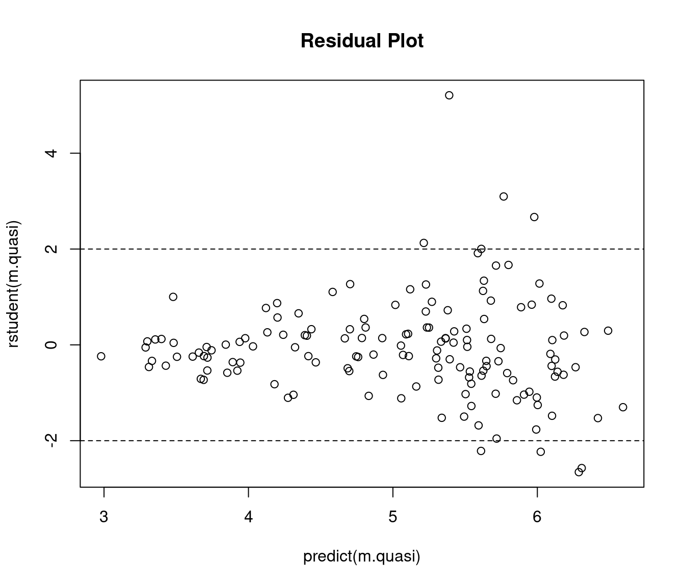
That was maybe somewhat less successful. Note the “megaphone” pattern.
The assumed variance structure is \[
\text{Var}(Y_i) = \phi E(Y_i).
\] We could relax this by assuming instead \[
\text{Var}(Y_i) = \phi E(Y_i)^p.
\] for some \(p > 1\). If
\(p\) = 1, 2, or 3 then we can use
quasi. Here we are using it for \(p\) = 2.
m.quasi <- glm(totabund ~ period * meandepth + offset(log(sweptarea)),
family = quasi(link = "log", variance = "mu^2"), data = fishing)
summary(m.quasi)$coefficients Estimate Std. Error t value Pr(>|t|)
(Intercept) -3.250e+00 1.592e-01 -20.4180 3.187e-44
period2000-2002 -6.041e-01 2.720e-01 -2.2212 2.791e-02
meandepth -1.041e-03 5.866e-05 -17.7403 5.988e-38
period2000-2002:meandepth 7.272e-05 9.992e-05 0.7278 4.679e-01plot(predict(m.quasi), rstudent(m.quasi), main = "Residual Plot")
abline(h = c(-2,2), lty = 2)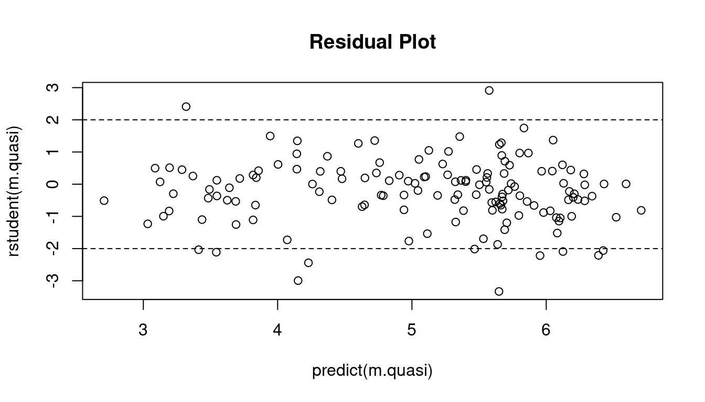
Note that quasi(link = "log", variance = "mu") is the same
as quasipoisson. For more options consider
family = tweedie. The tweedie family defines
power functions for link and variance functions of the form \[
E(Y_i)^q = \eta_i \ \ \ \text{and} \ \ \ \text{Var}(Y_i) = \phi
E(Y_i)^p,
\] where \(E(Y_i)^0 \equiv \log
E(Y_i)\) when using tweedie (not mathematically of
course — this is just for interface purposes). For example, to replicate
the quasi-likelihood model above we can use the following.
library(statmod) # for tweedie "family"
m.tweedie <- glm(totabund ~ period * meandepth + offset(log(sweptarea)),
family = tweedie(link.power = 0, var.power = 2), data = fishing)
summary(m.tweedie)$coefficients Estimate Std. Error t value Pr(>|t|)
(Intercept) -3.250e+00 1.592e-01 -20.4180 3.187e-44
period2000-2002 -6.041e-01 2.720e-01 -2.2212 2.791e-02
meandepth -1.041e-03 5.866e-05 -17.7403 5.988e-38
period2000-2002:meandepth 7.272e-05 9.992e-05 0.7278 4.679e-01The powers \(p\) and \(q\) are not required to be integers when
using tweedie.
Whether or not we use quasi-likelihood will affect the standard
errors, as well as tests and confidence intervals. Failing to account
for substantial over-dispersion can result in biased standard errors,
and thus incorrect tests and confidence intervals. Estimates of
parameters (of functions thereof such as what we get from
contrast) may or may not change, depending on the variance
structure.
m.poisson <- glm(totabund ~ period * meandepth + offset(log(sweptarea)),
family = poisson, data = fishing)
# rate ratios for year
trtools::contrast(m.poisson,
a = list(sweptarea = 1, meandepth = c(1000,2000,3000,4000,5000), period = "2000-2002"),
b = list(sweptarea = 1, meandepth = c(1000,2000,3000,4000,5000), period = "1977-1989"),
cnames = c("1000m","2000m","3000m","4000m","5000m"), tf = exp) estimate lower upper
1000m 0.5277 0.5100 0.5460
2000m 0.6020 0.5861 0.6183
3000m 0.6869 0.6565 0.7187
4000m 0.7837 0.7293 0.8421
5000m 0.8941 0.8087 0.9885trtools::contrast(m.tweedie,
a = list(sweptarea = 1, meandepth = c(1000,2000,3000,4000,5000), period = "2000-2002"),
b = list(sweptarea = 1, meandepth = c(1000,2000,3000,4000,5000), period = "1977-1989"),
cnames = c("1000m","2000m","3000m","4000m","5000m"), tf = exp) estimate lower upper
1000m 0.5878 0.4046 0.8540
2000m 0.6321 0.4869 0.8206
3000m 0.6798 0.5173 0.8935
4000m 0.7311 0.4905 1.0897
5000m 0.7863 0.4458 1.3867Using quasi-likelihood instead of maximum likelihood changes how inferences are made in several ways.
The standard errors are multiplied by \(\sqrt{\hat\phi}\). If \(\hat\phi > 1\) (which it probably is if over-dispersion is present) then the standard errors will be larger (and thus failing to account for over-dispersion leads us to usually underestimate them). Note that this adjustment is made automatically when using quasi-likelihood.
Wald confidence intervals and tests for a single parameter or function of parameters are based on the \(t\) distribution rather than the standard normal distribution. The \(t\) distribution is believed to provide more accurate results, although it is still an approximation.
Using confint or anova use the \(F\) distribution rather than the \(\chi^2\) distribution. The underlying test
statistic is similar to the \(F\) test
statistic used in normal linear models. When using anova
you should use test = "F" rather than
test = "LRT" if you are using quasi-likelihood.
Function in emmeans do not adjust the degrees of
freedom for estimating the dispersion parameter when using
quasi-likelihood. This does not make much difference unless \(n\) is small. But you can specify the it
manually via the df argument (use the degrees of freedom
for the residual deviance from summary or extract it with
modelname$df.residual). But contrast and
lincon do not require manual specification, although you
can via the df argument for those functions.
library(emmeans)
m.quasi <- glm(cbind(y, total - y) ~ species + density + species:density,
family = quasibinomial, data = myrotifer)
trtools::contrast(m.quasi,
a = list(species = c("kc","pm"), density = 0.02),
b = list(species = c("kc","pm"), density = 0.01),
cnames = c("kc","pm"), tf = exp) estimate lower upper
kc 2.967 2.220 3.965
pm 2.877 1.973 4.195pairs(emmeans(m.quasi, ~density|species, at = list(density = c(0.02, 0.01)),
type = "response"), infer = TRUE) # wrong dfspecies = kc:
contrast odds.ratio SE df asymp.LCL asymp.UCL null z.ratio p.value
density0.02 / density0.01 2.97 0.424 Inf 2.24 3.93 1 7.606 <.0001
species = pm:
contrast odds.ratio SE df asymp.LCL asymp.UCL null z.ratio p.value
density0.02 / density0.01 2.88 0.535 Inf 2.00 4.14 1 5.681 <.0001
Confidence level used: 0.95
Intervals are back-transformed from the log odds ratio scale
Tests are performed on the log odds ratio scale pairs(emmeans(m.quasi, ~density|species, at = list(density = c(0.02, 0.01)),
type = "response"), infer = TRUE, df = m.quasi$df.residual) # correct dfspecies = kc:
contrast odds.ratio SE df lower.CL upper.CL null t.ratio p.value
density0.02 / density0.01 2.97 0.424 36 2.22 3.96 1 7.606 <.0001
species = pm:
contrast odds.ratio SE df lower.CL upper.CL null t.ratio p.value
density0.02 / density0.01 2.88 0.535 36 1.97 4.20 1 5.681 <.0001
Degrees-of-freedom method: user-specified
Confidence level used: 0.95
Intervals are back-transformed from the log odds ratio scale
Tests are performed on the log odds ratio scale Admittedly it does not make much difference here.
A poorly specified mean structure may be mistaken for over-dispersion.
library(trtools)
ceriodaphniastrain$strain <- factor(ceriodaphniastrain$strain, labels = c("a","b"))
m <- glm(count ~ strain + sqrt(concentration), family = poisson, data = ceriodaphniastrain)
summary(m)
Call:
glm(formula = count ~ strain + sqrt(concentration), family = poisson,
data = ceriodaphniastrain)
Coefficients:
Estimate Std. Error z value Pr(>|z|)
(Intercept) 4.5284 0.0400 113.08 < 2e-16 ***
strainb -0.2750 0.0484 -5.68 1.3e-08 ***
sqrt(concentration) -1.6576 0.0474 -34.99 < 2e-16 ***
---
Signif. codes: 0 '***' 0.001 '**' 0.01 '*' 0.05 '.' 0.1 ' ' 1
(Dispersion parameter for poisson family taken to be 1)
Null deviance: 1359.38 on 69 degrees of freedom
Residual deviance: 164.28 on 67 degrees of freedom
AIC: 493.9
Number of Fisher Scoring iterations: 4plot(predict(m), rstudent(m))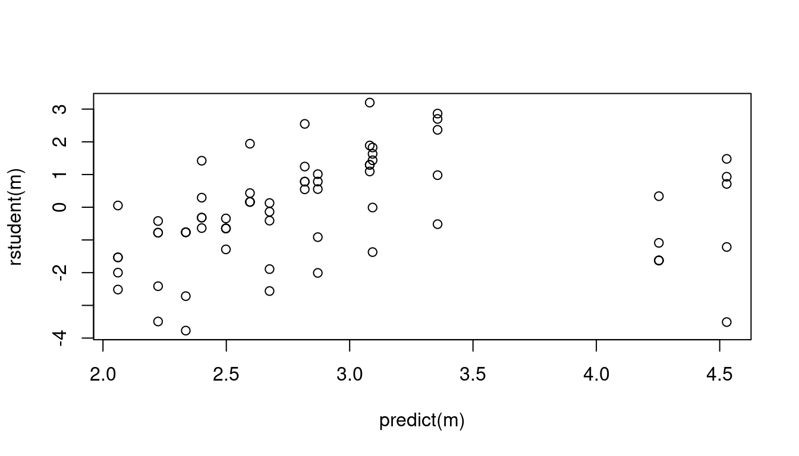
m <- glm(count ~ strain + concentration, family = poisson, data = ceriodaphniastrain)
summary(m)
Call:
glm(formula = count ~ strain + concentration, family = poisson,
data = ceriodaphniastrain)
Coefficients:
Estimate Std. Error z value Pr(>|z|)
(Intercept) 4.4546 0.0391 113.82 < 2e-16 ***
strainb -0.2750 0.0484 -5.68 1.3e-08 ***
concentration -1.5431 0.0466 -33.11 < 2e-16 ***
---
Signif. codes: 0 '***' 0.001 '**' 0.01 '*' 0.05 '.' 0.1 ' ' 1
(Dispersion parameter for poisson family taken to be 1)
Null deviance: 1359.381 on 69 degrees of freedom
Residual deviance: 86.376 on 67 degrees of freedom
AIC: 416
Number of Fisher Scoring iterations: 4plot(predict(m), rstudent(m))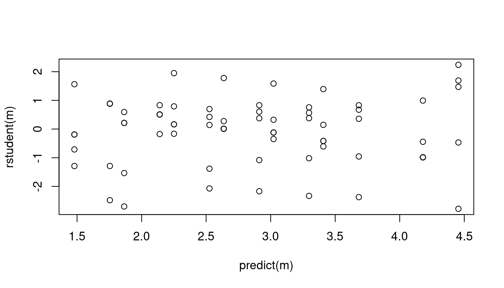
Quasi-likelihood for a GLM is essentially the same as using (nonlinear) regression with iteratively weighted least squares to account for heteroscedasticity. The weights are \[ w_i = \frac{1}{V(\hat{y}_i)}, \] where \(V\) is the variance function.
Example: Consider the model for the trawling data where the variance is proportional to \(E(Y_i)^2\). To estimate this model using iteratively weighted least squares we use weights of \(w_i = 1/E(Y_i)^2\).
m.quasi <- glm(totabund ~ period * meandepth + offset(log(sweptarea)),
family = quasi(link = "log", variance = "mu^2"), data = fishing)
summary(m.quasi)$coefficients Estimate Std. Error t value Pr(>|t|)
(Intercept) -3.250e+00 1.592e-01 -20.4180 3.187e-44
period2000-2002 -6.041e-01 2.720e-01 -2.2212 2.791e-02
meandepth -1.041e-03 5.866e-05 -17.7403 5.988e-38
period2000-2002:meandepth 7.272e-05 9.992e-05 0.7278 4.679e-01fishing$w <- 1
for (i in 1:10) {
m.iwls <- nls(totabund ~ exp(b0 + b1*(period == "2000-2002") + b2*meandepth +
b3*(period == "2000-2002")*meandepth + log(sweptarea)), data = fishing,
start = list(b0 = -3, b1 = -0.6, b2 = 0, b3 = 0), weights = w)
fishing$w <- 1 / predict(m.iwls)^2
}
summary(m.iwls)$coefficients Estimate Std. Error t value Pr(>|t|)
b0 -3.250e+00 1.592e-01 -20.4179 3.189e-44
b1 -6.041e-01 2.720e-01 -2.2213 2.790e-02
b2 -1.041e-03 5.866e-05 -17.7402 5.991e-38
b3 7.273e-05 9.992e-05 0.7279 4.679e-01Example: Consider the model for the rotifer data. Here the variance is proportional to \(E(Y_i)[1 - E(Y_i)_i]/m_i\) (recall that \(m_i\) is the “total possible” for the counts). To estimate this model using iteratively weighted least squares we use weights of \[ w_i = \frac{m_i}{E(Y_i)[1-E(Y_i)]}. \]
m.binomial <- glm(cbind(y, total - y) ~ species * density,
family = quasibinomial, data = myrotifer)
summary(m.binomial)$coefficients Estimate Std. Error t value Pr(>|t|)
(Intercept) -114.352 14.95 -7.6472 4.736e-09
speciespm 4.629 24.46 0.1893 8.509e-01
density 108.746 14.30 7.6056 5.358e-09
speciespm:density -3.077 23.46 -0.1312 8.964e-01myrotifer$w <- 1
for (i in 1:20) {
m <- nls(y/total ~ plogis(b0 + b1*(species == "pm") + b2*density +
b3*(species == "pm")*density), data = myrotifer, weights = w,
start = list(b0 = -114, b1 = 4.6, b2 = 109, b3 = -3))
myrotifer$yhat <- predict(m)
myrotifer$w <- myrotifer$total / (myrotifer$yhat * (1 - myrotifer$yhat))
}
summary(m)$coefficients Estimate Std. Error t value Pr(>|t|)
b0 -114.338 14.95 -7.6485 4.718e-09
b1 4.614 24.46 0.1887 8.514e-01
b2 108.732 14.29 7.6069 5.338e-09
b3 -3.063 23.46 -0.1306 8.968e-01Note that plogis is the function \(e^x/(1 + e^x)\). The model can be written
as \[
E(Y_i) = \frac{e^{\eta_i}}{1 + e^{\eta_i}}
\] where \(Y_i\) is the observed
proportion, and \[
\eta_i = \beta_0 + \beta_1 s_i + \beta_2 d_i + \beta_3 s_i d_i,
\] where \(s_i\) is an indicator
variable for the pm species, and \(d_i\) is the density.
Using iteratively weighted least squares is not necessary if we can
use quasi or tweedie, but it is a useful
option for cases where the variance structure is outside what can be
done with quasi or tweedie (although one can
program new variance structures).